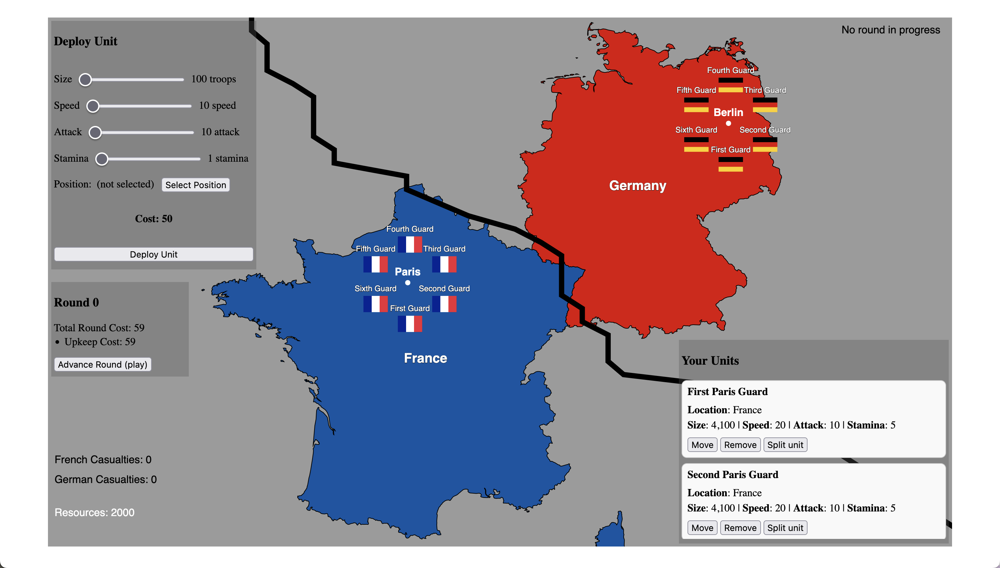

this game is a work in progress! there are significant changes to game mechanics to come. opbp is a
turn-based (almost) strategy game where you fight a war against your opponent.
how do i win/lose?
the war is fought over Victory Points. every city on the map is worth a number of
victory points (its industrial value). both nations start with an equal number of points
(99 each) — you win when you control 150 victory points, forcing the enemy's
war economy to collapse.
you lose if the enemy reaches 150 victory points first.
ok, what's going on?

the game
we're playing as france, the country in blue. each country starts with a ring of guard units surrounding
its capital city and a small garrison guard posted on every victory point city.
Quick start: click a unit on the map, then click where you want it to march. Click Advance Round
(or press N) to see it play out. Press Esc to cancel any selection.
units
each unit has a size, speed, attack, and stamina. all of these stats play a role in how
the unit performs on the battlefield.
size is how many troops are in the unit
speed is how fast a unit can move across the map
attack is how much damage a unit can inflict on an enemy unit
stamina affects how the unit degrades over time and in battle
about a unit:
they can move across the map
they can attack enemy units when in contact
you can merge nearby units to form a larger unit (or split huge ones)
they don't always cover the target in just one round
they degrade over time if in enemy territory and in battle
they cost resources to deploy, maintain, and move
upkeep for a unit is greater when it is in enemy territory
it costs larger units more to move and upkeep
hovering over a unit shows it in the Your Units panel
the frontline
the frontline is the large black line.
this line changes as your units move around the map.
on the map, a circle around the frontline shows which side's army currently controls it.
rounds
the game is turn-based, and each turn is a round
each round, you can deploy units, move units, shell the enemy, and merge units
orders are issued in the planning phase; press N to execute them
at the end of each round, you gain resources, but you also lose some resources for upkeep and movement
victory points are tallied when a round ends — hold 150 of them to win the war
victory points & manpower
cities are worth victory points (the number drawn on each city marker)
victory points are controlled by whichever army has more troops present near the city — march in and seize the enemy's cities
resource income each round is purely based on the victory points you control; capture cities to fund your war effort
your effective manpower scales with victory points: it equals victory points controlled ÷ starting victory points, so it starts at 1.0×, climbs as you conquer, and shrinks if you lose ground
manpower regrows every round (a little faster than before), up to a ceiling
every victory point city starts with a small garrison guard defending it — crack them before you can hold the city
resources
resources are shown in the bottom left corner
resources pay for units, upkeep, movement, fortresses, doctrines, and artillery
you earn income every round from the Victory Point cities you control (capture cities to steal income)
a city produces income for whoever's army currently controls it; bigger cities matter most
the bottom-right of the resource panel tracks each side's victory points against the 150 target
supply & encirclement
every unit draws a supply line back to its capital, colored green (well supplied) to red (starving)
The further a unit is from its capital, the weaker it fights
surrounded (encircled) units rapidly starve — the red rings mark units that are cut off
encircle enemy armies to bleed them dry from the rear
fortresses
build fortresses in your own territory, behind the frontline, with the Fortifications panel
defenders next to a fortress fight harder and wear out attackers who assault it
france starts with the Maginot Line already built along the border
artillery
New. Spend resources to bombard enemy positions at the start of the next round.
pick a preset in the Artillery panel, click Fire Mission, then click a target on the map
more powerful barrages cost more and cover a wider area
direct hits bleed troops and fatigue the survivors, slowing their advance
shell congested frontline clusters — and beware, the enemy has artillery of its own
doctrines
the Doctrines panel lets you adopt up to two military doctrines
Defense in Depth (stronger on your own soil, cheaper forts), Blitzkrieg (faster & stronger attacks, cheaper movement), Industrial Mobilization (more income), Logistics (supply decays slower)
doctrine costs rise with each adoption — the enemy studies you and adopts doctrines of its own
controls
N or Enter — advance round
Esc — cancel selection / targeting
click a unit on the map, then click the destination to march it
in the Your Units panel: Move (click a destination), Merge, Split, Remove / Surrender